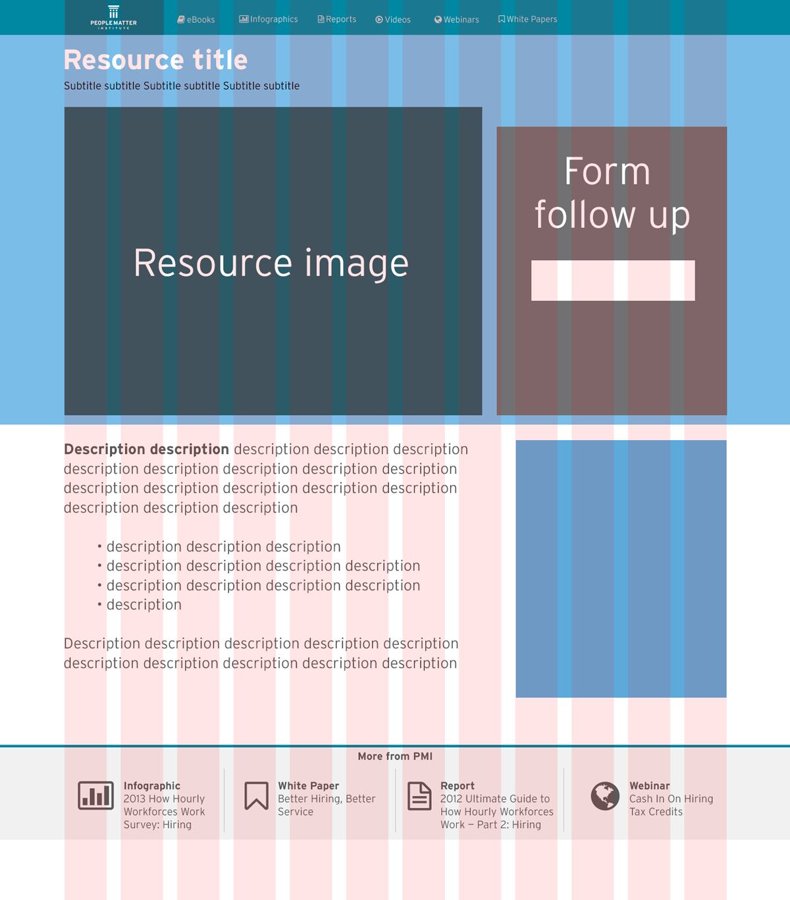
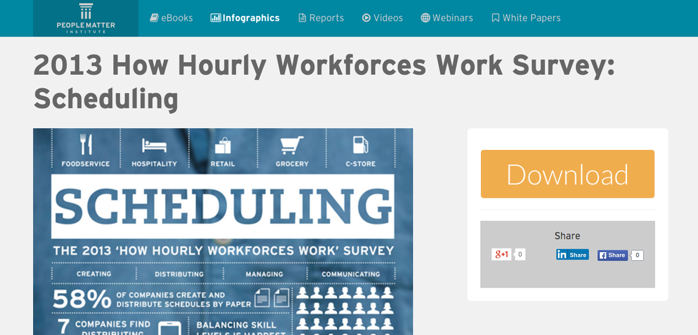

CMS resource center wireframe
The PeopleMatter Institute (PMI), PeopleMatter's thought leadership division, creates content in the form of webinars, infographics, reports and white papers. These assets are promoted through email campaigns and social media but are also available through the corporate website.
Problem
The number of assets from PMI grew significantly, but searching to find the one you wanted was next to impossible. You needed to have a direct link to the one you wanted. A new webinar initiative also required us to allow someone to register for a webinar directly from the page without going to a third party site.
Solution
Created a central repository that makes it easy to filter and select a specific resource based on type or topic. Created various resource page types depending on whether pre-registration was required.
My role
- Planning/Wireframing
- Design
- Project management
I'd seen similar sorting menus like this around the web while researching the changes we wanted to make to the resource center. We had well over 50 assets that we wanted users to be able to find easily or discover someting they didn't know we had.

This is my Photoshop high fidelity mockup for the revamped standalone resource page. There were no new content types or pieces to add to the page. This made it easier to communicate with our developers excactly where we needed everthing to go. All they needed was a simple layout like this from which to work.
This the standalone resource pages for a resource tagged as an infographic. For resources that are PDFs or other downloadable formats we present the download and sharing options.
This the registration page for an upcoming webinar. The custom form integrates with Pardot (our marketing automation platform) and GoToWebinar to register the user all from a single page. We thought this was a better experience than making them have to visit a third party page to register.

This the standalone resource pages for a webinar resource that has already taken place. We integrated our video hosting platform, Wistia, as well as a link to a copy of the presentation on Slideshare.